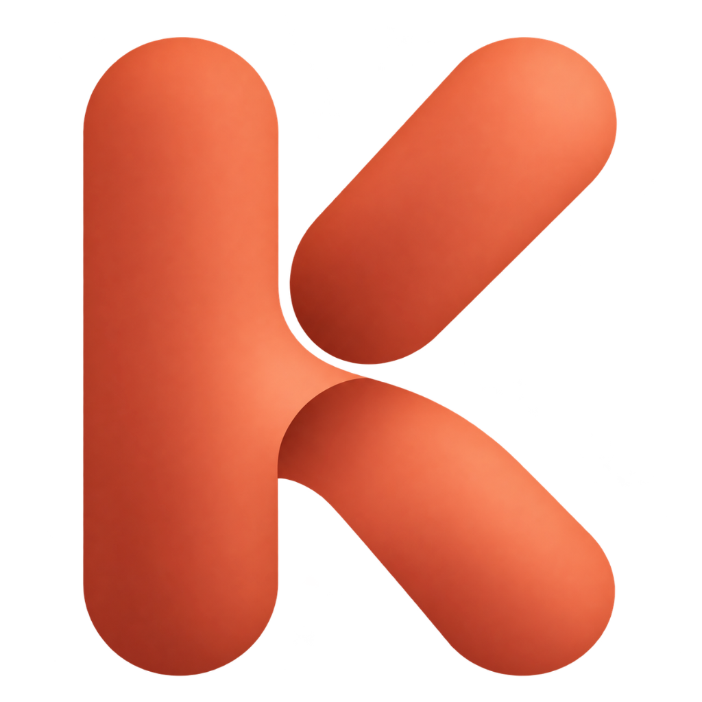

KORAS · Aprendizaje guiado
Un espacio para conectar lo que aprendes.
Referencia visual del plan maestro. Navega entre las vistas o entra en Anatomía y Tórax.
Maqueta local · datos ficticios

KORASMA
Referencia visual del plan maestro. Navega entre las vistas o entra en Anatomía y Tórax.

KORAS